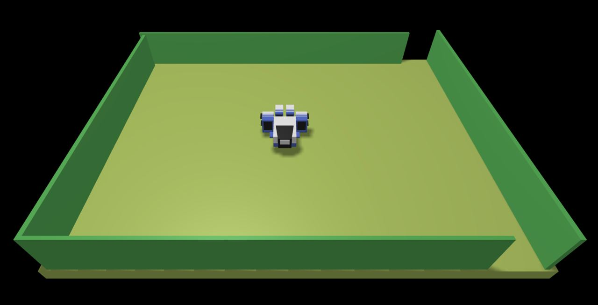
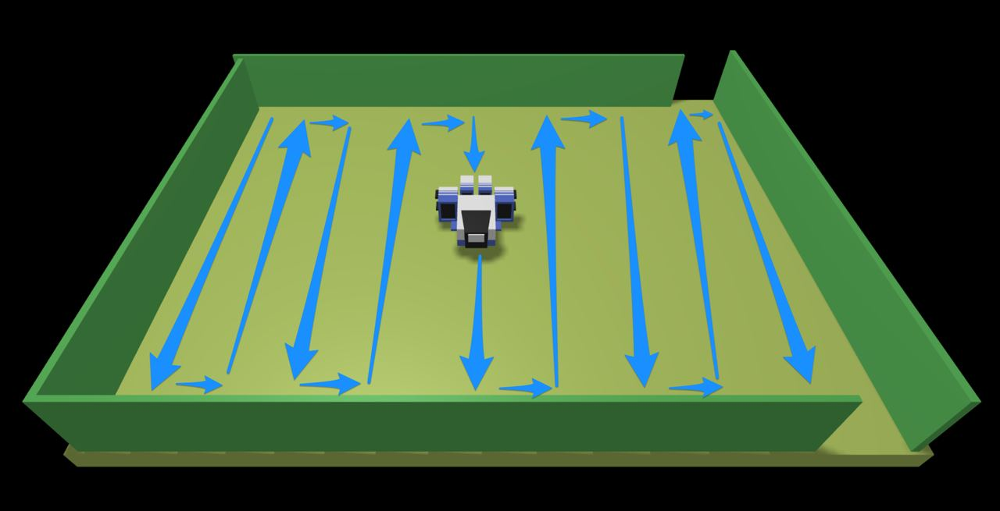
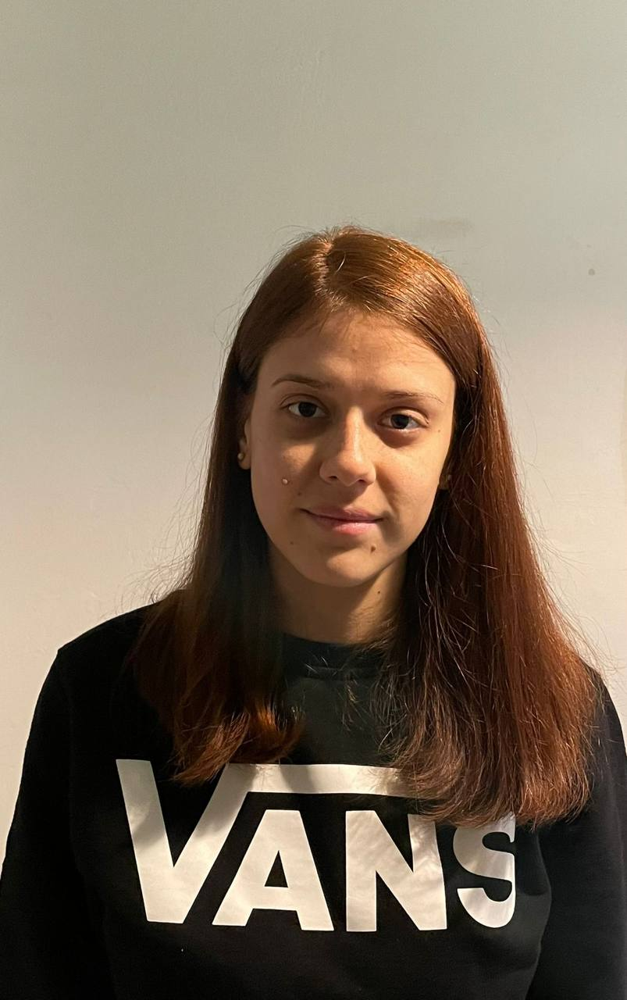

Si desideri realizzare il VirtualRobot in modo da coprire tutta la superficie di una stanza vuota.
Requirement analysis
La nostra interazione con il committente ha chiarito cosa egli intende per:
robot: dispositivo capace di ricevere comandi via rete
stanza: stanza rettangolare convenzionale.
vuota: priva di ostacoli.
coprire la superficie: il robot si muove avanti, indietro, sinistra e destra in modo da mappare tutta la stanza.

Problem analysis
Il robot può ricevere i comandi in due modi differenti:
HTTP POST: inviando i comandi alla porta 8090
websocket: inviando i comandi alla porta 8091
L’invio di messaggi con HTTP implica una interazione logica di tipo request-response che blocca il chiamante.
Mentre l’invio di un comando di movimento al robot (mossa) mediante WebSocket ws implica una forma di comunicazione asincrona (fire-and-forget).
Per HTTP Non è possibile interrompere l’esecuzione di una mossa attivata da un comando POST con un altro comando POST. Mentre nel caso WS è possibile interrompere l’esecuzione di una mossa solo con il comando alarm.
Test plans

Per verificare che l'applicazione soddisfi i requisiti, potremmo tenere traccia delle mosse effettuate dal robot riempiendo una stringa bidimensionale che chiameremo testString.
Le mosse da fare saranno: forward , turnLeft e turnRigh .
Il robot parte dalla casella in alto a sinistra rivolto verso sud in posizione [0][0] .
Alla prima forward il robot si sposterà nella casella [0][1] , riempiamo quindi la stringa testString [0][1] con una x.
Alla seconda forward il robot si sposterà nella casella [0][2] , riempiamo quindi la stringa testString [0][2] con una x.
Procedendo in questo modo, inserendo una x ogni volta che il robot fa una mossa di forward, ci aspettiamo di ottenere una matrice composta da sole x.
Project
Testing
Deployment
Maintenance
By Annamaria Simonitto email: annamaria.simonitto@studio.unibo.it
